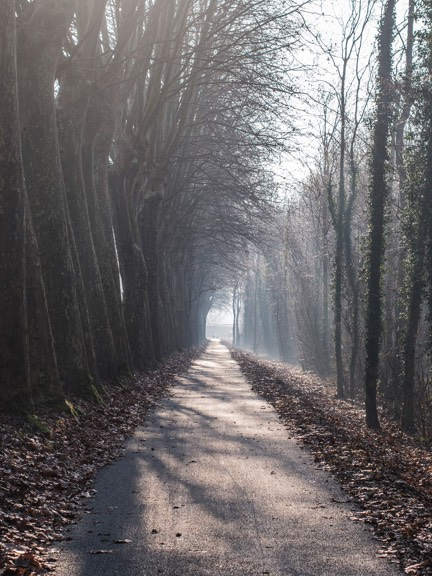
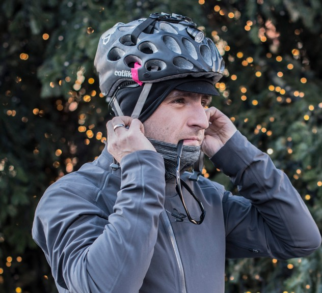
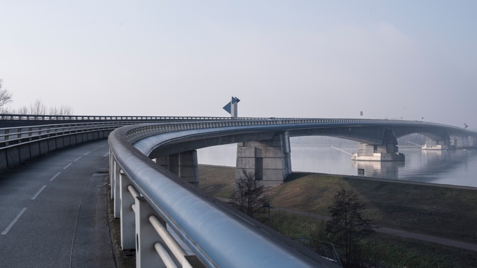
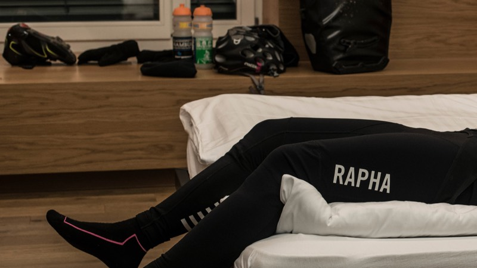

28. Dic
Offenburg
Basel
Distancia
141,8 km
Alititud
255 m
Calorias
1953 kcal
Nunca me había una meta tan larga en tan pocos días. Creo que mi peor enemigo será el frío.
 
Mi viaje comienza en Offenburg, Alemania, luego de visitar un par de amigos el día anterior y preparar luego con tranquilidad la bicicleta y mi equipo de viaje, con todo lo necesario para no pasarme de frío.
Salí de Offenburg como a eso de las 11:15 de la Mañana con -4 grados y con una neblina muy espesa que a los pocos kilómetros saliendo de la ciudad se desvanecía a medida que me adentraba en el valle del río Rhin, disfrutando del sol pero también del frío y su silencio, muy omnipresente en cada kilómetro que iba dejando atrás.
El puente que cruza el Rhin sirve también de frontera entre Alemania y Francia, por la cual la ruta seguía hasta Eschau para tomar posteriormente la una larga ciclovía a un costado de un canal de muchos kilómetros (canal du Rôhne au Rhin), pasando constantemente por diques, avenidas de árboles solitarias y por sobretodo por barcos estacionados acondicionados como casas, recordándome un poco a Holanda y la relación que tienen los habitantes con los ríos y canales.
El estado de la ciclovía esta óptimo para entrenar por ejemplo triathlon, ya que el camino es simplemente recto sin grandes interrupciones, ideal para romper algun record de velocidad.
A veces el camino era interrumpido por fortalezas de guerra y bunkers como recuerdo de una época extremadamente violenta y salvaje, como lo fue la segunda guerra mundial.
Muchos ciclistas no encontré camino a Basel (10 a lo maximo?), escondidos seguramente todos del frío.
A la altura de Artzenheim la larga ciclovía se termina, a no ser que uno quiera seguir junto al canal con una cyclocross por lo irregular del camino, el cual no era mi caso, desviándome hacia Baltzenheim y Kunheim, donde me llamó extremadamente la atención de cómo los campesinos almacenan el trigo en grande muros hechos del mismo trigo.
El día se iba oscureciendo ya como a eso de las 16:30, en la cual en el pequeño pueblo de Neuf-Brisach de tomé el tiempo de parar para tomar algo caliente y recuperar un poco de energía. Por lo oscuro ya del día no me tomé como objetivo conocer esta ciudad, a pesar de ser muy turística.
Ya de noche y con los primeros 142 Kilómetros hechos, llegué a Basel (Suiza) justo en la frontera con Francia como a eso de las 21:20, haciendo el Check-in a tiempo en el hotel y por fín darme un merecido descanzo.
